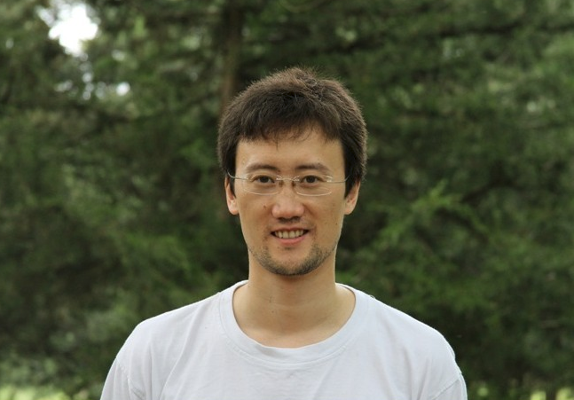

Мирбек Носинов
Обо мне
Родился в СССР. Сейчас проживаю в Казахстане.
Образование
Высшее техническое - Кыргызский технический университет. Инженер по специальности: "Вычислительные машины, комплексы, системы и сети"
Опыт работы
- +15 лет опыта работы в Software Development.
- +10 лет опыта работы в Backend Development.
Хобби
- Зимой - Катаюсь на сноуборде
- Летом - Увлекаюсь легким бегом
Как я становился разработчиком
- В 2002 закончил Кыргызский технический универсистет
- C 2002 начал работать по своей специальности - разработчиком ПО. Начинал с разработки скриптов для обработки данных файлов dbase IV на foxpro. Затем были Visual FoxPro
- Затем с 2003 были C++, PHP, C#, Java.
- C 2020 по текущее время, разрабатываю Backend на Python, используя Django. Планирую пройти курс по Frontend в Skillfactory и стать Fullstack разработчиком.
Контактные данные
телефон: +7777777777
e-mail: myemail@gmail.com